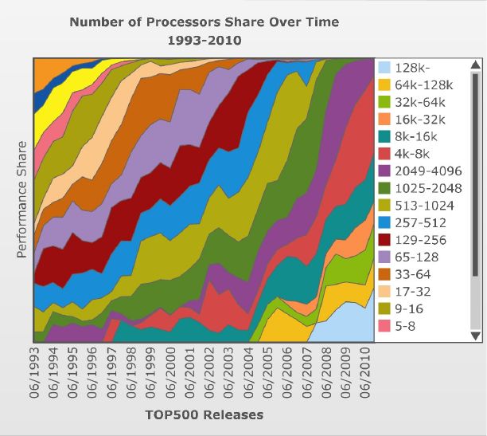
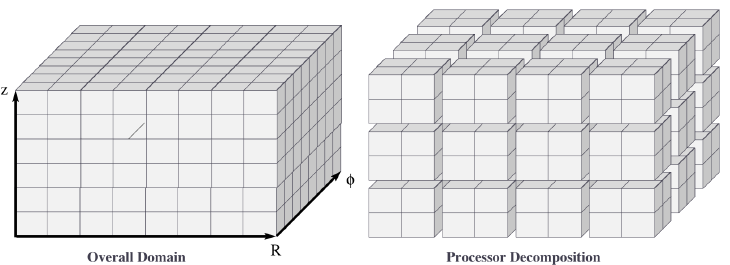
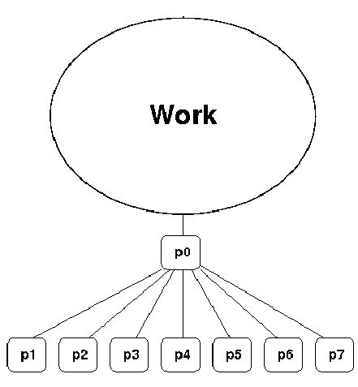
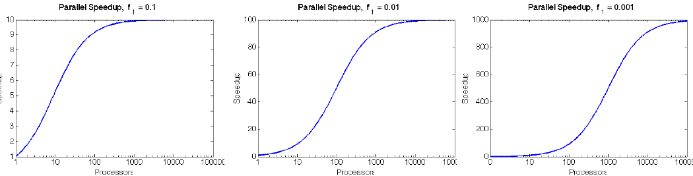

Introduction to High-Performance Computing#
High-Performance Computing#
In essence, high-performance computing (HPC) merely means the use computing resources that are significantly more powerful than what is common. As such, it’s always a moving target.
Motivation#
Moore’s law#
Historically, we have depended on hardware advances to enable faster and larger simulations. In 1965, Gordon Moore observed that the CPU and RAM transistor count about doubled each year. “Moore’s Law” has since been revised to a doubling once every 2 years, with startling accuracy. However physical limits, e.g. power consumption, heat emission, and even the size of the atom, have currently stopped this expansion on individual processors, with speeds that have leveled off since around 2008.

CPU vs. Memory/Disk Speed#
The overall rate of any computation is determined not just by the processor speed, but also by the ability of the memory system to feed data to it.
Thanks to Moore’s law, clock rates of high-end processors have increased at roughly 40% per year since the 1970’s.
However, over that same time interval, RAM access times have improved at roughly 10% per year.
This growing mismatch between processor speed and RAM latency presents an increasing performance bottleneck, since the CPU spends more and more time idle, waiting on data from RAM.
The Parallel Solution#
In addition, many simulations require incredible amounts of memory to achieve high-accuracy solutions (PDE & MD solvers, etc.), which cannot fit on a single computer alone.
The natural solution to these problems is the use of parallel computing:
Use multiple processors concurrently to solve a problem in less time.
Use multiple computers to store data for large problems.
The Gordon Bell Prize (below) is awarded to each year’s simulation that achieves the highest FLOP rate:
![[from David E. Keyes, HiPC2007]](../_images/algorithm_moore.png)
Flynn’s parallel architecture taxonomy#
We classify parallel computers according to their control structure along the metrics:

Single/multiple instruction streams: how many types of instructions may be performed at once?
Single/multiple data streams: how many data streams may be operated on at once?
Most modern parallel computers (and personal comp.) are MIMD.
SIMD was popular until 1990s.
MISD never used to large extent.
Parallel Computing Hardware#
We historically group parallel computing architectures into two primary categories according to the memory layout on these machines: shared memory and distributed memory. However, modern parallel computers are a hybrid between these two categories.
Multiprocessors#
In the 80’s, vendors began to attach multiple processors to the same memory.

Perhaps the most easily usable (but costliest) approach for parallelism:
Straightforward extension of uniprocessor: multiple CPUs are attached to the bus, all sharing the same primary memory, so the same memory address on different CPUs refers to the same memory location.
Also called a Shared Memory Parallel (SMP) computer.
Processors interact and synchronize with each other through shared variables.
Local cache memory keeps CPUs busy; but can lead to cache coherency issues.
Performance is limited by bus bandwidth.
Allows efficient use of at most a few dozen processors.
Larger SMP systems exist, but rapidly become prohibitively expensive.
Multicore Processors#
Most modern computer processors employ multiple computational cores:

Replicates much (but not all) of a processor’s logic on multiple chips.
Allows the processor to behave like a shared-memory parallel machine.
Each core has local cache: Data, Instruction and Address (TLB).
These local caches are all at Level 1 (closest to the CPU).
However, the cores share the unified L2 cache:
Typically much larger than L1 cache.
Contains both instructions and data.
Limitations:
Bus bandwidth (like SMPs).
Slower effective cache bandwidth than SMPs, since L2 cache is shared.
Multicomputers#
A more cost-effective approach to construction of larger parallel computers relies on a network to connect disjoint computers together:

Each processor only has direct access to its own local memory address space; the same address on different processors refers to different memory locations.
Processors interact with one another through passing messages.
Commercial multicomputers typically provide a custom switching network to provide low-latency, high-bandwidth access between processors.
Commodity clusters are build using commodity computers and switches/LANs.
Clearly less costly than SMP, but have increased latency/decreased bandwidth between CPUs.
Construction may be symmetric, asymmetric, or mixed.
Theoretically extensible to arbitrary processor counts, but software becomes complicated and networking gets expensive.
Machine Size History#
Historical plot of the processor/core count in computers comprising the Top500 list from 1993-2010.

Note the trend to achieve performance advances through increases in parallelism.
Such rapid parallelism increases have put limitations on the parallel architectures that may be used.
History of Parallel Architectures#
Historical plot of the computer architectures comprising the Top500 list from 1993-2010:

Definitions of terms above:
MPP: Massively Parallel Processors (commercially-designed)
Cluster: ‘loosely’ coupled commodity parts [ManeFrame]
SMP: Shared Memory Parallel
Constellations: Distributed group of SMP Machines
Note the extinction of large shared-memory machines, replaced by distributed-memory MPP and Cluster machines.
“Anyone can build a fast CPU. The trick is to build a fast system.” – Seymour Cray
Distributed Parallel Networks#
Since clusters pass messages to communicate between CPUs, the speed of a parallel computation inherently depends on the speed of the network.
Networks can consist of simple LAN networks, or can be customized switches.
A shared medium (e.g. LAN) allows only one message at a time.
Each processor ‘listens’ to every message, receiving only those sent to it.
To send a message, a processor must wait until the medium is unused.
If two processors send at the same time, messages interfere and must re-send.
Switched media support point-to-point messages among pairs of processors, with each processor having its own communication path to the switch.
Allow concurrent transmission of messages between different processor pairs.
Support the scaling of the network to allow large numbers of processors.
Switched network topologies vary by computer: ring, mesh, binary-tree, hypertree, butterfly, hypercube and shuffle-exchange networks are all common.
Common switches for commodity clusters include:
Fast Ethernet: 100 Mbit/sec bandwidth, 100 μsec latency
Gigabit Ethernet: 1-10 Gbit/sec bandwidth, 100 μsec latency
Infiniband: 40 Gbit/sec bandwidth, 1.07 μsec latency

Compare these to on-computer speeds of:
L1 cache: 700 Gbit/sec (Intel Sandybridge)
L2 cache: 400 Gbit/sec (Intel Sandybridge)
Memory bus: 168 Gbit/sec (PC3-1333 DDR3-SDRAM)
Disk: 6 Gbit/sec (SATA-3)
Parallel Computing Paradigms: Shared vs. Distributed Memory#
The question then arises as to how we may use these parallel computers. There are a number of options:
Auto-parallelizing compilers (easiest):
Automatically identify and parallelize existing sequential programs.
Difficult to do well: although an algorithm may be inherently parallelizable, the compiler may have difficulty realizing the extent, and putting it into practice.
Only readily available for shared-memory parallelization.
Extend a sequential language (most popular):
Extend sequential programming languages with functions that allow creation, termination synchronization and communication of parallel processes.
May be developed as a subroutine library or compiler directives; thereby allowing reuse of the sequential language, compiler, and most code.
Create a new parallel language from scratch (High Performance Fortran, UPC, C*)
Add a parallel programming layer: A separate parallel programming system calls sequential procedures to orchestrate the combined program.
“I know how to make 4 horses pull a cart – I don’t know how to make 1024 chickens do it.” – Enrico Clementi
MIMD Example – The “Jiffy Lube” Model#
Jiffy Lube advertises a “12-point check”, consisting of changing the oil and filter, interior vacuum, battery check, windshield wiper check, brake fluid check, tire pressure check, etc.; 6 attendants cooperate to do these tasks on each car.
In coarse-grained parallelism, the major tasks are done in parallel. Here, the vacuuming, battery and fluid checks can be done while the oil is being changed.
In fine-grained parallelism, tasks requiring similar processing are done in parallel – 4 attendants could each check the pressure of a tire.
Data dependencies arise when certain tasks must wait to be started until others have finished and their results are made available.
The oil cannot be refilled until the oil filter has been changed, creating a coarse-grained data dependency.
If a tire needs to be changed and 5 attendants are each assigned to tighten a different lug nut, they cannot proceed concurrently since the nuts must be tightened in a given order – a fine-grained data dependency.
Other relevant MIMD definitions (and their Jiffy Lube equivalents):
Data partitioning – multiple but essentially identical processes each work on a portion of the data to be processed [check tire pressure or tighten lug nuts]
Function partitioning – multiple processes perform different kinds of tasks [one vacuums, another checks the battery, a third does the oil change]
Prescheduled loops – work distribution to multiple processors is fixed by the programmer in the code or by the compiler at compile time [Pete always checks the battery, Flo always does the oil change]
Statically scheduled loops – work distribution is fixed at run time. For example, it can depend on the number of processors [the first one to work in the morning gets to do wipers all day]
Dynamically scheduled loops – work distribution determined during execution, when a processor becomes available it takes the next item that needs work [once Frank finishes vacuuming, he does the next item on the checklist]
General parallel computing definitions#
Partitioning/Decomposition: the means by which an overall computation is divided into smaller parts, some or all of which may be executed in parallel.
Tasks: programmer-defined computational subunits determined through the decomposition.
Concurrency: the degree to which multiple tasks can be executed in parallel at any given time (more is better).
Granularity: the size of tasks into which a problem is decomposed
A decomposition into a large number of small tasks is called fine-grained.
A decomposition into a small number of large tasks is called coarse-grained.
Task-interaction: the tasks that a problem is decomposed into often share input, output, or intermediate data that must be communicated.
Processes: individual threads of execution. A single processor may execute multiple processes, each of which can operate on multiple tasks.
The primary question in parallel algorithms – decomposition#
Any decomposition strategy must determine a set of primitive tasks.
Goals:
Identify as many primitive tasks as possible (increases potential parallelism): prefer at least an order of magnitude more tasks than processors.
Minimize redundant computations and data storage (efficiency, scalability).
Want primitive tasks to be roughly equal work (load balancing).
Want the number of tasks to increase as the problem gets larger (scalability).
Data decompositions are approaches that first divide the data into pieces and then determine how to associate computations with each piece of data.
Functional decompositions are approaches that first divide the computation into functional parts and then determine how to associate data items with the individual computations.
Overhead and load balancing#
After decomposition, we must map tasks onto processes with the goal that all tasks finish in the shortest time.
We strive to minimize overheads for executing the tasks, including:
The time spent communicating between processors,
The time some processors spend sitting idle,
The time spent in the spawning of new threads.
Idle processes occur due to:
An uneven load distribution,
Unresolved dependencies from an earlier parallel task set,
A heterogeneous machine, where processors operate at different speeds.
Load balancing is the attempt to map processes with the dual objectives:
Reduce the amount of inter-processor communication.
Reduce the amount of time some processors are idle while others are working.
This can be a non-trivial task, since these two objectives usually conflict with each other.
Data decompositions#
Domain decomposition#
Tasks are statically or semi-statically mapped onto processes based on spatial location; each task performs similar operations on different data (subdomains).
Work is interspersed with communication to synchronize the tasks or share data.
The degree of parallelism increases with problem size, enabling effective use of more processes on larger problems.
Typical domain decomposition approaches:


Domain decomposition example: PDE approximation of an aircraft#
Suppose we want to simulate 3D elasticity for vibrations/deformations in an aircraft.
A relevant domain decomposition of the problem could be:
Process 0 solves the model over the fuselage,
Process 1 solves the model over the left wing,
Process 2 solves the model over the right wing,
Process 3 solves the model over the tail.
The processes must communicate to send relevant data about how the fuselage interacts with the wings and tail.
Not all processes need to communicate – only those who own adjacent parts of the plane.
If the wing deformations are greater than the tail, computations on processes 1 and 2 could take longer than process 3.
Work pool model#

Tasks are dynamically mapped onto processes, where any task may potentially be performed by any process.
Useful for load balancing if individual tasks may take dramatically different amounts of time.
Typical when the data is small compared to the computation associated with tasks, and/or there are many more tasks than processes.
Work pool example: particle dynamics#
Suppose we wish to simulate the dynamics (position and velocity) of a large number of collisionless particles in an external force field, and where particles with a greater speed require increased processing.
This model first divides the overall set into a large number of subsets [e.g. each particle, or small packets of particles].
Each process begins work on evolving a different subset of particles.
When each task finishes with their set, they begin work on another set, until all of the sets of particles have been processed.
The granularity of tasks can be adjusted to trade-off between load imbalance and the overhead of accessing the queue of remaining particles.
The pool may be stored in a physically-shared list, or some physically-distributed data structure requiring communication to determine the remaining work to be done.
Functional decompositions#
Manager-worker#
This approach goes by many names: controller-agent, professor-student, Wonka-Loompa.

One or more manager processes generate tasks and assign them to worker processes.
Tasks may be allocated a priori if the manager can estimate the task size.
Alternatively, workers can be assigned small pieces when they are ready for more work.
Care must be taken to ensure that the manager does not become a bottleneck.
Should choose granularity of tasks so that the cost of doing work dominates the cost of assigning/transferring work.
Manager-worker example: simulated annealing#
Simulated annealing is a stochastic optimization algorithm for functions with multiple local minima.
At each iteration, a current solution is randomly changed to create an alternate solution in the neighborhood of the current solution.
The new iterate replaces the current solution if its function value is lower.
If the value is higher it can also replace the objective function with probability \(e^{-\Delta/T}\), where \(\Delta\) is the difference in function values and \(T\) is the ‘temperature’.
A manager process can set up a work queue with many initial iterates.
The manager assigns workers to each investigate different neighborhoods.
The manager keeps track of the n best solutions, adding new, refined neighborhoods to the queue to improve these ‘optimal’ solutions.
The manager decides when work stops by either setting a pre-defined iteration limit, or by noticing stagnation of the optimal solution set.
Pipeline model#

A stream of data is passed through a succession of processes, each of which performs some task on the data.
The pipeline typically involves a static mapping of tasks onto processes.
Forms a chain of producers and consumers, with each process consuming the output of preceding processes, and producing data for subsequent processes.
Load balancing is a function of task granularity:
The larger the granularity the longer it takes to fill the pipeline.
Too fine a granularity can increase overheads in the transmission of data.
Parallel computing metrics#
Scalability is the ability of a parallel algorithm to effectively utilize a parallel machine.
Strong scaling: the goal is speed up algorithms that are possible on one computer, but slow.
Fix overall problem size and increase the number of processors, p.
Hope that the execution time decreases in inverse proportion to p.
![[from David E. Keyes, HiPC2007]](../_images/strong_scaling.png)
Weak scaling: the goal is to enable problems that cannot fit on one computer due to large size (resolution-limited).
Fix problem size per processor, and increase p.
Hope that the execution time remains constant, as both problem size and process count are increased proportionately.
![[from David E. Keyes, HiPC2007]](../_images/weak_scaling.png)
For strong-scaling tests, we also compute the following performance measures:
We typically compare these metrics against the theoretically “best-case scenario”, as determined through Amdahl’s Law (1967):
Let \(f\) be the fraction of work that is not parallelizable; and \((1-f)\) be the fraction of work that is perfectly parallelizable.
Assume it takes time \(t\) to complete the task on one processor.
The theoretical time for \(p\) processors to accomplish the same task should be \(t \left(f + \frac{1-f}{p}\right)\).

Group Discussion: Parallel Decomposition#
You need to compute the sum of 1000 numbers as rapidly as possible.
You have a stack of 1000 index cards, each with a single number, and you are in charge of 1000 accountants, each with a pencil and a set of blank index cards.
These accountants are sitting at desks in a large room, where the desks are organized into 50 rows of 20 desks each. Each accountant can only pass cards to her four nearest accountants (front, back, left and right). You can choose to use any number of these accountants that you wish, and you can have accountants do different tasks.
What is an optimal method for distributing cards to accountants?
What is an optimal method for accumulating subtotals generated by the active accountants into a grand total?
How will these approaches change if you increase the work to adding 10^4^ numbers with the same 1000 accountants? What about 10^5^ numbers?
Is it possible for 1000 accountants to perform the task 1000 times faster than only one accountant?
Is there a better way to arrange the desks to reduce the time needed to distribute cards and collect subtotals?
M3#
Usage and specifics of M3 can be found in the HPC documentation. Specifically, we’ll cover:
Hardware
Software
Introduction to UNIX
Lmod Environment Module System
Slurm Resource Management and Job Scheduling System